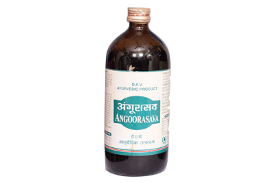

ABHAYRISHTA
$3.45
The best ayurvedic concoction used to treat conditions like constipation, anorexia, piles, and anal fistula.

ANGOORSAVA
$4.56
Angoorasava is an ayurvedic tonic used for improving appetite and reducing fatigue. In ayurveda, it is commonly used for a non-productive cough.